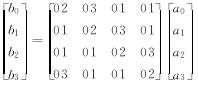
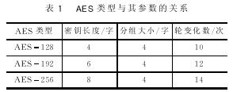
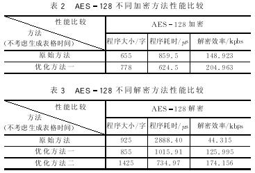

AES是美国高级加密标准算法,将在未来几十年里代替DES在各个领域中得到广泛应用。本文在研究分析AES加密算法原理的基础上，着重说明算法的实现步骤，并结合AVR汇编语言完整地实现AES加密和解密。根据AES原理，提出几种列变化的优化算法，并根据实验结果分析和比较它们的优缺点。 关键词：AES算法 DES AVR汇编语言 加密算法 解密算法
引 言
随着对称密码的发展,DES数据加密标准算法由于密钥长度较小(56位),已经不适应当今分布式开放网络对数据加密安全性的要求，因此1997年NIST公开征集新的数据加密标准,即AES[1]。经过三轮的筛选,比利时Joan Daeman和Vincent Rijmen提交的Rijndael算法被提议为AES的最终算法。此算法将成为美国新的数据加密标准而被广泛应用在各个领域中。尽管人们对AES还有不同的看法,但总体来说,AES作为新一代的数据加密标准汇聚了强安全性、高性能、高效率、易用和灵活等优点。AES设计有三个密钥长度:128,192,256位，相对而言，AES的128密钥比DES的56密钥强1021倍[2]。AES算法主要包括三个方面：轮变化、圈数和密钥扩展。本文以128为例，介绍算法的基本原理；结合AVR汇编语言，实现高级数据加密算法AES。
1 AES加密、解密算法原理和AVR实现
AES是分组密钥，算法输入128位数据，密钥长度也是128位。用Nr表示对一个数据分组加密的轮数（加密轮数与密钥长度的关系如表1所列）。每一轮都需要一个与输入分组具有相同长度的扩展密钥Expandedkey(i)的参与。由于外部输入的加密密钥K长度有限,所以在算法中要用一个密钥扩展程序(Keyexpansion)把外部密钥K扩展成更长的比特串,以生成各轮的加密和解密密钥。
1.1圈变化
AES每一个圈变换由以下三个层组成:
非线性层——进行Subbyte变换；
线行混合层——进行ShiftRow和MixColumn运算；
密钥加层——进行AddRoundKey运算。
① Subbyte变换是作用在状态中每个字节上的一种非线性字节转换,可以通过计算出来的S盒进行映射。
Schange:
ldi zh,＄01;将指针指向S盒的首地址
mov zl,r2；将要查找的数据作为指针低地址
ldtemp,z+；取出这个对应的数据
mov r2,temp；交换数据完成查表
.
.
.
ret
② ShiftRow是一个字节换位。它将状态中的行按照不同的偏移量进行循环移位，而这个偏移量也是根据Nb的不同而选择的[3]。
shiftrow:;这是一个字节换位的子程序
mov temp,r3;因为是4×4
mov r3,r7; r2 r6 r10 r14 r2 r6 r10 r14
mov r7,r11; r3 r7 r11 r15---r7 r11 r15 r3
mov r11,r15; r4 r8 r12 r17 r12 r17 r4 r8
mov r15,temp; r5 r9 r13 r18 r18 r5 r9 r13
mov temp,r4
mov temp1,r8
mov r4,r12
mov r8,r17
mov r12,temp
mov r17,temp1
mov temp,r18
mov r18,r13
mov r13,r9
mov r9,r5
mov r5,temp
ret
③ 在MixColumn变换中,把状态中的每一列看作GF(28)上的多项式a(x)与固定多项式c(x)相乘的结果。b(x)=c(x)*a(x)的系数这样计算:*运算不是普通的乘法运算,而是特殊的运算，即
b(x)=c(x)·a(x)(mod x4+1)
对于这个运算
b0=02。a0+03。a1+a2+a3
令xtime(a0)=02。a0
其中，符号“。”表示模一个八次不可约多项式的同余乘法[3]。
mov temp,a0;这是一个mixcolimn子程序
rcall xtime;调用xtime程序
mov a0,temp
mov temp,a1
rcall xtime
eor a0,a1
eor a0,temp
eor a0,a2
eor a0,a3;完成b(x)的计算
.
.
.
xtime:;这是一个子程序
ldi temp1,＄1b
lsl temp
brcs next1;如果最高位是1,则转移
next: ret;否则什么也不变化
next1:eor temp,temp1
rjmp next

http://www.utf.com.cn/article/UploadFile/200703/151201340.jpg
对于逆变化,其矩阵C要改变成相应的D,即b(x)=d(x)＊a(x)。
④ 密钥加层运算(addround)是将圈密钥状态中的对应字节按位“异或”。
⑤ 根据线性变化的性质[1],解密运算是加密变化的逆变化。这里不再详细叙述。
1.2轮变化
对不同的分组长度，其对应的轮变化次数是不同的,如表1所列。

http://www.utf.com.cn/article/UploadFile/200703/151201341.jpg
http://www.utf.com.cn/article/UploadFile/200703/151201342.jpg
http://www.utf.com.cn/article/UploadFile/200703/151201413.jpg
http://www.utf.com.cn/article/UploadFile/200703/151201414.jpg
这样一来,只用几个简单的“异或”就可以实现列变化，使倍乘的次数降低,提高解密的速度。
优化方法二：构造表格。
同加密构造方法一样，可以构造四个表格T[ea]=e×a; T[9a]=9×a;T[9a]=9×a;T[ba]=b×a。这样一来，也只需要进行查表和简单的异或就可以完成解密的任务。虽然这种方法将增加额外的开销,但是它却是一种有效的方法。
3 AES加密与解密的实验仿真
根据以上实验步骤和优化方法得出表2、3所列实验结果。

http://www.utf.com.cn/article/UploadFile/200703/151201425.jpg